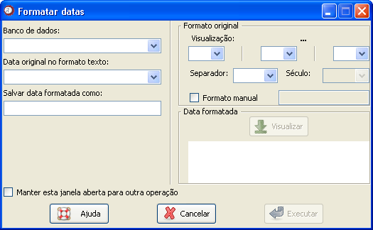

Gráfico
de controle
Gráfico
de controle
Figura 1. Janela "Gráfico de controle".
Para a construção de um gráfico de controle, siga os seguintes passos:
1. Selecione o banco de dados no campo "Banco de dados". Para isso, é necessário que o banco já tenha sido aberto (detalhes sobre como abrir abrir dados ou importar dados via ODBC).
2. Selecione a periodicidade em que os dados estão apresentados.
Se a periodicidade for diária, siga o seguinte passo.
3. Selecione a variável correspondente a data. Nesse campo, só estarão habilitadas as variáveis com o formato data do R. Se não aparecer nenhuma variável nesse campo, clique no botão com reticências, ao lado. Uma nova janela será aberta, como pode ser observada na figura 2, onde é possível criar uma variável configurada para o R. (ajuda sobre formatar datas)

Figura 2. Janela "Formatar datas".
Figura 2. Janela "Formatar datas".
Para que a nova variável criada possa ser selecionada no campo "Data", após retornar para a janela "Gráfico de controle", selecione novamente o banco de dados.
Quando a periodicidade for semanal ou mensal, é necessário que o banco de dados traga as informações referentes aos meses e anos de análise separadamente, pois o diagrama resultante será apresentado de forma mensal. Para isso, siga o seguinte passo:
3. Selecione as variáveis que representam o mês da informação e o ano nos campo "Variável mês" e "Variável ano", respectivamente.
Os próximos passos valem para qualquer periodicidade.
4. Selecione a variável de interesse no campo "Variável". Nesse campo, todas as variáveis numéricas serão apresentadas.
5. Escolha o método desejado para a construção do gráfico de controle. No Epi-R é possível construiros gráficos de controle utilizando os valores médios ou medianos para a variável
6. Algumas opões adicionais estão disponíveis em Opções de controle.
-
Limites para o nível endêmico: O número escolhido será utilizado para
construir os intervalos de decisão quando o método escolhido para a
construção do gráfico for o método de médias.
- Incluir anos posteriores ao ano de análise: Marque essa opção quando, por um lado, o ano de análise não for o último ano das informações, e por outro, for desejada a utilização de todas as informações para o cálculo dos limites de decisão. Dessa forma, os limites de decisão serão calculados com base nos dados tanto dos anos anteriores ao ano de análise como posteriores.
- Incluir anos posteriores ao ano de análise: Marque essa opção quando, por um lado, o ano de análise não for o último ano das informações, e por outro, for desejada a utilização de todas as informações para o cálculo dos limites de decisão. Dessa forma, os limites de decisão serão calculados com base nos dados tanto dos anos anteriores ao ano de análise como posteriores.
7. Para alterar os padrões de apresentação do gráfico, como cor e tipo da linha e títulos, utilize as Opções do gráfico.
Quando todas as opções tiverem sido preenchidas, clique em "Executar". Para construir diversos gráficos de controle usando essa janela, marque a opção "Manter essa janela aberta para outra operação". Com isso, o gráfico será construído, mas essa janela não será fechada, evitando o retrabalho de acessá-la.